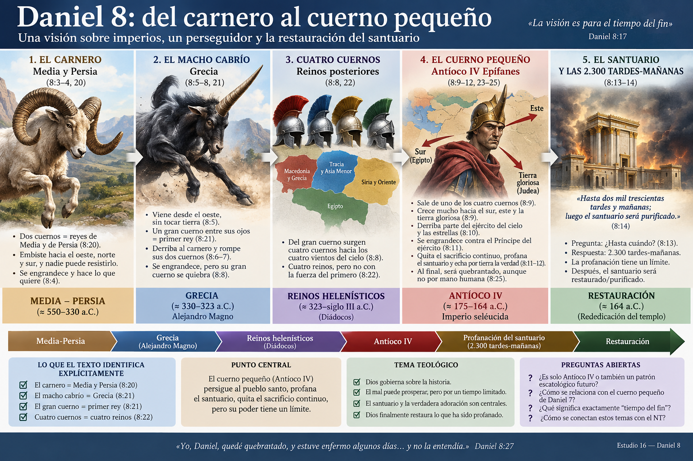
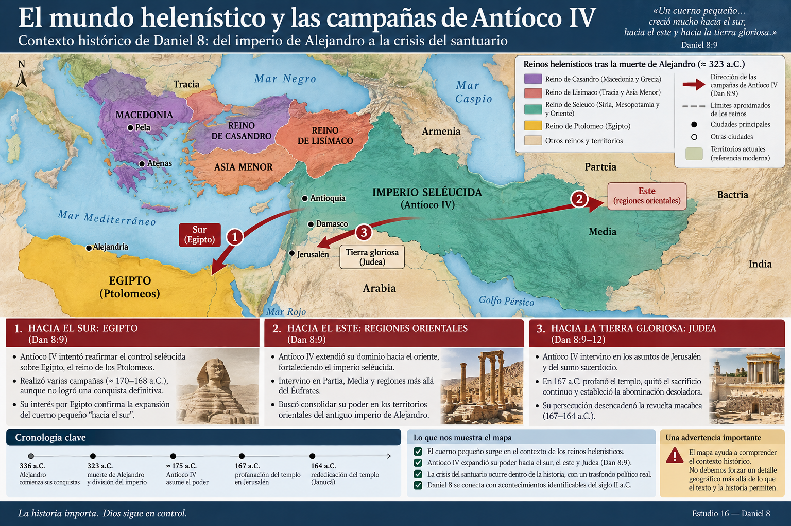
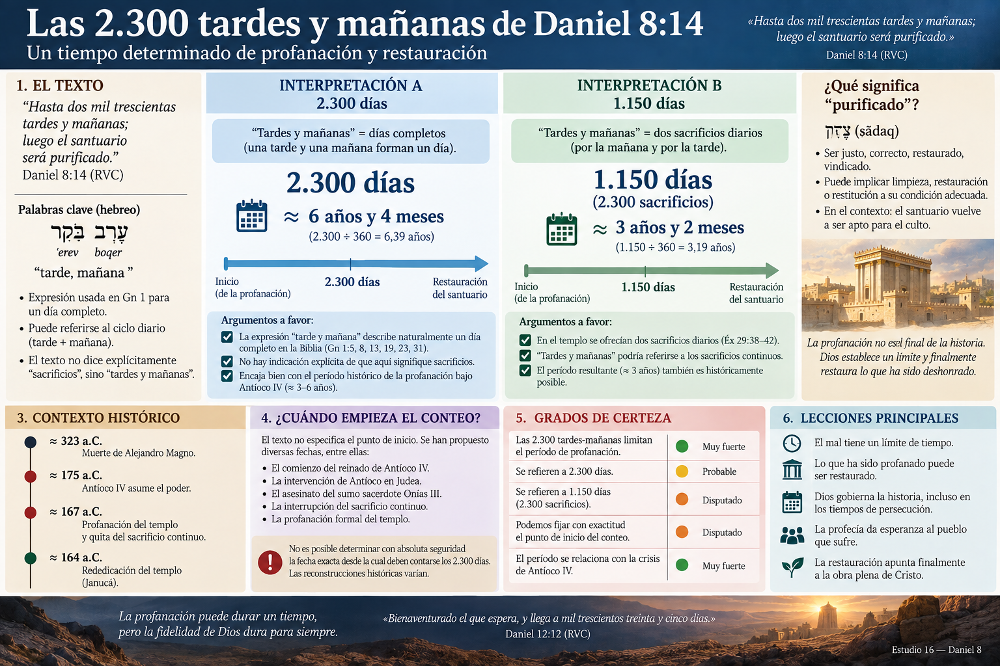

📖 ESTUDIO 16 — Daniel 8: el carnero, el macho cabrío y Antíoco IV
Del conflicto entre imperios a la profanación del santuario
Daniel 8 es uno de los capítulos más importantes para aprender cómo interpretar correctamente la profecía bíblica. A diferencia de otras visiones donde debemos trabajar mucho para identificar los símbolos, aquí el propio texto proporciona varias identificaciones:
- el carnero representa a Media y Persia;
- el macho cabrío representa a Grecia;
- el gran cuerno representa al primer rey;
- después aparecen cuatro reinos;
- finalmente surge un cuerno pequeño que persigue al pueblo santo y ataca el santuario.
Esto nos proporciona una ventaja metodológica enorme:
Antes de preguntar qué podría significar Daniel 8 para el futuro, debemos escuchar qué dice Daniel 8 que significan sus propios símbolos.
Y esto será especialmente importante cuando lleguemos a Antíoco IV Epífanes.
1. 📍 Ubicación de Daniel 8 dentro del libro
Daniel 8 comienza:
«En el año tercero del reinado del rey Belsasar, yo, Daniel, tuve una visión…» — Daniel 8:1
Estamos nuevamente durante el período babilónico.
La visión ocurre cronológicamente antes de la caída de Babilonia y antes del episodio de Daniel 5.
Sin embargo, Babilonia prácticamente desaparece de la visión.
Esto es significativo.
En Daniel 7 vimos una secuencia de cuatro bestias. En Daniel 8 el enfoque se estrecha considerablemente.
Ahora la atención está puesta en:
Medo-Persia → Grecia → división del imperio griego → perseguidor → santuario
Por tanto, Daniel 8 no simplemente repite Daniel 7.
Hace una especie de zoom profético.
🟢 Muy fuerte
Daniel 8 se concentra especialmente en acontecimientos relacionados con Persia, Grecia y la crisis del santuario.
2. 🏛️ El escenario de la visión
Daniel dice:
«Vi en visión que me encontraba en Susa, la capital del reino, en la provincia de Elam; y vi en visión que estaba junto al río Ulai.» — Daniel 8:2
Susa llegaría a convertirse en una importante residencia real del Imperio persa.
La encontramos también en Ester y Nehemías.
Esto resulta interesante porque Daniel todavía vive bajo Babilonia cuando recibe la visión.
El escenario parece anticipar el imperio que pronto dominará la región.
Pero debemos ser prudentes.
🟡 Probable
La localización en Susa encaja deliberadamente con el protagonismo que Persia tendrá inmediatamente en la visión.
No necesitamos buscar un significado simbólico adicional en la ciudad.
3. 🐏 El carnero de dos cuernos
Daniel observa:
«Vi un carnero que estaba delante del río, y que tenía dos cuernos…»
El animal tiene una característica particular:
los dos cuernos son altos, pero uno termina siendo más alto que el otro.
Luego el carnero embiste:
- hacia el oeste,
- hacia el norte,
- hacia el sur.
Ninguna bestia puede resistirlo.
Daniel 8:4 resume su dominio:
«…hacía lo que quería, y se engrandecía.»
Aquí podríamos comenzar a especular sobre el significado.
Pero no necesitamos hacerlo.
El ángel Gabriel posteriormente explica:
«En cuanto al carnero que viste, que tenía dos cuernos, éstos son los reyes de Media y de Persia.» — Daniel 8:20
Esta identificación es explícita.
🟢 Identificación segura
Carnero = Media y Persia.
No depende de reconstrucciones modernas.
Está dentro del propio texto.
4. ¿Por qué dos cuernos?
El carnero representa una realidad imperial compuesta:
Media + Persia.
Pero los cuernos no permanecen iguales.
Uno se vuelve mayor.
Esto corresponde bastante bien al desarrollo histórico de la alianza medo-persa, en la cual Persia terminó convirtiéndose en la potencia predominante.
🟢 Muy fuerte
Los dos cuernos corresponden a Media y Persia, porque Daniel 8:20 lo declara explícitamente.
🟡 Probable
El cuerno que posteriormente se vuelve mayor refleja la preeminencia persa dentro del imperio.
Aquí encontramos un principio importante para interpretar Daniel:
Los cuernos representan poder político o gobernantes asociados con un reino.
Pero tampoco debemos convertir esto en una fórmula mecánica para absolutamente todos los textos apocalípticos.
El contexto sigue gobernando la interpretación.
5. 🐐 Aparece el macho cabrío
Mientras Daniel contempla al carnero ocurre algo dramático.
Desde el oeste aparece un macho cabrío.
Daniel lo describe avanzando:
«…sin tocar tierra.»
La imagen transmite una velocidad extraordinaria.
Además posee:
«un cuerno notable entre sus ojos.»
El macho cabrío ataca violentamente al carnero.
Lo derrota.
Le rompe los dos cuernos.
Y nadie puede rescatar al carnero.
Nuevamente, no necesitamos adivinar quién representa.
Gabriel explica:
«El macho cabrío es el rey de Grecia, y el cuerno grande que tenía entre sus ojos es el primer rey.» — Daniel 8:21
🟢 Identificación explícita
Macho cabrío = Grecia.
Gran cuerno = primer rey de ese dominio griego.
Históricamente, esta descripción encaja extraordinariamente bien con Alejandro Magno.
6. ⚔️ Alejandro Magno y la velocidad de la conquista
Alexander the Great conquistó el Imperio persa con extraordinaria rapidez durante el siglo IV a.C.
Las campañas decisivas contra Persia incluyeron victorias como:
Gránico → Issos → Gaugamela
y culminaron con el derrumbe del poder aqueménida.
Esto hace que la imagen del macho cabrío avanzando desde occidente con una velocidad casi sobrenatural resulte históricamente muy apropiada.
Pero debemos distinguir cuidadosamente:
🟢 Muy fuerte
Grecia derrota a Medo-Persia.
Eso está interpretado directamente por Daniel 8.
🟢 Muy fuerte
El gran cuerno representa al primer gran rey del reino griego.
🟢 Muy fuerte históricamente
La identificación con Alejandro Magno encaja con la sucesión histórica descrita.
7. 💥 El gran cuerno se rompe
Justo cuando el macho cabrío alcanza enorme poder sucede algo inesperado:
«Y el macho cabrío se engrandeció sobremanera; pero estando en su mayor fuerza, aquel gran cuerno fue quebrado…» — Daniel 8:8
Esto es notable.
El cuerno no desaparece durante una etapa de decadencia.
Es quebrado:
cuando era fuerte.
Alejandro murió en Babilonia en 323 a.C., todavía joven y en la cima de su poder imperial.
Pero entonces ocurre algo todavía más importante para interpretar la visión.
Del lugar del gran cuerno aparecen:
«cuatro cuernos notables hacia los cuatro vientos del cielo.»
Gabriel explica:
«El cuerno que fue quebrado, y los cuatro que lo sucedieron, significan que de esa nación se levantarán cuatro reinos, aunque no con la fuerza de él.» — Daniel 8:22
Esto también limita muchísimo nuestras posibilidades interpretativas.
8. 🧭 Los cuatro reinos posteriores
Después de la muerte de Alejandro comenzó una larga lucha entre sus sucesores, conocidos tradicionalmente como los diádocos.
Con el tiempo surgieron varios centros importantes de poder helenístico.
Una reconstrucción habitual relaciona los cuatro cuernos con:
| Región/dinastía | Área aproximada |
|---|---|
| Casandro | Macedonia y Grecia |
| Lisímaco | Tracia y partes de Asia Menor |
| Seleuco | Siria, Mesopotamia y extensas regiones orientales |
| Ptolomeo | Egipto y territorios asociados |
La historia real de las guerras sucesorias fue bastante más compleja que una división instantánea del imperio en cuatro partes perfectamente delimitadas.
Eso merece destacarse.
Daniel presenta una imagen profética condensada, no un manual detallado de historia helenística.
🟢 Muy fuerte
Después del gran rey aparecen varios reinos griegos inferiores al poder original.
🟡 Probable
Los cuatro cuernos corresponden a los principales poderes helenísticos surgidos del imperio de Alejandro.
🟠 Disputado en los detalles
La identificación exacta de cada uno de los cuatro cuernos con una división territorial rígida.
Esto nos protege de simplificar demasiado la historia para hacerla encajar en un esquema.
9. 🔎 Entonces aparece el personaje central
Ahora llegamos al corazón del capítulo.
«De uno de ellos salió un cuerno pequeño, que creció mucho hacia el sur, hacia el este y hacia la tierra gloriosa.» — Daniel 8:9
Este personaje dominará el resto de la visión.
Aquí aparece una cuestión extremadamente importante.
En Daniel 7 también encontramos un:
“cuerno pequeño”.
¿Son automáticamente el mismo personaje?
No.
La semejanza lingüística merece atención, pero no basta para establecer identidad.
Debemos estudiar primero el contexto de Daniel 8.
10. 🧩 ¿De dónde surge el cuerno pequeño?
El hebreo de Daniel 8:9 permite una discusión gramatical interesante.
El versículo anterior menciona:
«los cuatro vientos del cielo».
Después dice que de uno de ellos salió un cuerno pequeño.
La pregunta es:
¿“uno de ellos” se refiere a los cuernos o a los vientos?
La lectura tradicional suele entender:
uno de los cuatro cuernos.
Es decir:
Alejandro → cuatro reinos helenísticos → de uno de esos reinos surge el cuerno pequeño.
Gramaticalmente existe discusión porque las concordancias de género permiten considerar otra relación sintáctica.
Sin embargo, el desarrollo histórico y literario posterior favorece fuertemente un origen dentro del mundo helenístico.
Y Daniel 8:23 es especialmente importante:
«Y al final del reinado de éstos se levantará un rey…»
El personaje surge en el contexto de esos reinos posteriores a Alejandro.
🟢 Muy fuerte
El cuerno pequeño pertenece al escenario histórico posterior a la fragmentación del imperio griego.
🟡 Probable
Surge específicamente de uno de los poderes derivados de aquella fragmentación.
11. 👑 Antíoco IV Epífanes entra en escena
Aquí encontramos una de las identificaciones históricas más fuertes de todo Daniel.
El personaje descrito en Daniel 8 corresponde de manera extraordinaria a:
Antiochus IV Epiphanes.
Antíoco IV fue rey del Imperio seléucida entre aproximadamente 175 y 164 a.C.
Pertenecía precisamente al mundo político surgido después de Alejandro.
Y sus campañas siguieron direcciones que encajan con Daniel:
sur → Egipto
este → regiones orientales
tierra gloriosa → Judea
Pero la correspondencia se vuelve mucho más fuerte cuando llegamos al santuario.

12. 🏛️ Antíoco y Jerusalén
Durante el conflicto entre los reinos helenísticos, Judea quedó atrapada especialmente entre dos grandes poderes:
Ptolomeos de Egipto
y
Seléucidas de Siria.
Jerusalén quedó finalmente bajo dominio seléucida.
En el siglo II a.C., las tensiones políticas internas judías, los procesos de helenización y las luchas por el sumo sacerdocio se combinaron con las políticas de Antíoco.
La situación terminó convirtiéndose en una crisis religiosa devastadora.
El culto del templo fue interrumpido.
El santuario fue profanado.
Las prácticas judías fueron perseguidas.
Y se estableció un culto incompatible con la adoración de YHWH.
Este contexto resulta esencial para entender Daniel 8.

13. 🌟 El ejército del cielo y las estrellas
Daniel describe al cuerno:
«Creció hasta llegar al ejército del cielo, y parte del ejército y de las estrellas echó por tierra, y las pisoteó.» — Daniel 8:10
Este es lenguaje apocalíptico.
No debemos imaginar inmediatamente estrellas físicas cayendo literalmente sobre Jerusalén.
En la Biblia, las estrellas y el ejército celestial pueden funcionar de diferentes maneras.
Pueden relacionarse con:
- seres celestiales;
- pueblo de Dios;
- gobernantes;
- imágenes simbólicas de exaltación y caída.
El propio Daniel 8 posteriormente interpreta la actividad del rey principalmente en términos de persecución contra:
“el pueblo de los santos” (8:24).
Por eso existe una fuerte posibilidad de que las imágenes celestiales describan simbólicamente el ataque contra el pueblo santo.
🟡 Probable
Las estrellas representan o incluyen al pueblo santo perseguido.
🟠 Disputado
Que Daniel esté describiendo además un conflicto directo contra seres angelicales.
No necesitamos resolverlo todavía.
❓ Queda abierto el alcance exacto de la imaginería celestial.
14. 👑 El “Príncipe del ejército”
El cuerno continúa creciendo:
«Aun contra el príncipe de los ejércitos se engrandeció…» — Daniel 8:11
Aquí la rebelión adquiere una dimensión vertical.
El rey no solamente oprime personas.
Su ataque contra el culto constituye una afrenta contra el Dios al cual pertenece ese culto.
Más adelante Daniel 8:25 dice:
«…se levantará contra el Príncipe de los príncipes…»
La identidad exacta de estas expresiones merece prudencia.
🟢 Muy fuerte
El perseguidor se exalta contra la autoridad divina.
🟡 Probable
“Príncipe del ejército” y “Príncipe de los príncipes” apuntan finalmente a Dios o a su autoridad suprema.
🟠 Disputado
Identificar directamente cada expresión con una manifestación específica del Mesías preencarnado.
Eso requeriría evidencia adicional.
15. 🔥 El ataque contra el sacrificio
Ahora aparece la conexión histórica decisiva.
Daniel dice que el cuerno:
«…quitó el sacrificio continuo, y el lugar de su santuario fue echado por tierra.»
El término hebreo importante aquí es:
תָּמִיד — tamid
Su idea básica es:
continuo / regular.
En este contexto se refiere al culto sacrificial regular del templo.
El ataque no es solamente militar.
Es cultual.
El perseguidor intenta destruir el orden de adoración establecido.
Por eso Daniel 8 no trata simplemente sobre imperios.
Trata sobre:
el choque entre el poder imperial arrogante y la adoración al Dios de Israel.
16. ⚠️ “Echó por tierra la verdad”
Daniel continúa:
«…echó por tierra la verdad, e hizo cuanto quiso, y prosperó.» — Daniel 8:12
Esta frase resulta teológicamente impactante.
El mal parece triunfar.
El santuario está profanado.
La verdad es pisoteada.
El perseguidor prospera.
Y Dios aparentemente guarda silencio.
Este patrón aparecerá repetidamente en la literatura apocalíptica:
opresión → aparente triunfo del mal → límite establecido por Dios → juicio → restauración.
Pero Daniel 8 introduce algo fundamental:
el mal puede prosperar, pero solamente durante un tiempo limitado.
17. ⏳ La gran pregunta: “¿Hasta cuándo?”
Daniel escucha a seres santos hablando.
Uno pregunta:
«¿Hasta cuándo durará la visión del sacrificio continuo, y la prevaricación asoladora entregando el santuario y el ejército para ser pisoteados?» — Daniel 8:13
Esta pregunta es profundamente bíblica.
No pregunta simplemente:
¿qué está ocurriendo?
Pregunta:
¿hasta cuándo?
Encontramos esta misma clase de clamor en los Salmos, los profetas y posteriormente en Apocalipsis.
Es la pregunta del pueblo sufriente:
Si Dios gobierna, ¿cuánto tiempo permitirá que el mal continúe?
La respuesta es uno de los números más discutidos de Daniel.
18. 🔢 Las 2.300 tardes y mañanas
La respuesta dice:
«Hasta dos mil trescientas tardes y mañanas; luego el santuario será purificado.» — Daniel 8:14
Hebreo:
עֶרֶב בֹּקֶר — ʿerev boqer
literalmente:
“tarde-mañana”.
Aquí aparecen dos interpretaciones principales.
Interpretación A — 2.300 días
“Tardes y mañanas” describe días completos.
Entonces:
2.300 días ≈ 6 años y 4 meses.
Interpretación B — 1.150 días
Como había sacrificio por la mañana y por la tarde, las 2.300 “tardes-mañanas” representarían 2.300 sacrificios, equivalentes aproximadamente a:
1.150 días ≈ 3 años y 2 meses.
Esta segunda interpretación puede parecer atractiva por el contexto sacrificial.
Pero existe un problema.
Daniel no dice explícitamente:
2.300 sacrificios.
Dice:
2.300 tardes-mañanas.
Además, la expresión “tarde y mañana” recuerda naturalmente la manera bíblica de describir días.
Por eso no deberíamos convertir automáticamente 2.300 en 1.150.
🟡 Probable
Las 2.300 tardes-mañanas representan 2.300 días.
🟠 Disputado
Que representen 1.150 días mediante el conteo de dos sacrificios diarios.
19. 📅 ¿Encajan exactamente los 2.300 días con Antíoco?
Aquí debemos resistir una tentación frecuente.
Buscar una fecha histórica inicial y otra final hasta conseguir exactamente:
2.300 días.
Tenemos información histórica importante sobre la persecución de Antíoco y la posterior restauración del templo, pero establecer con absoluta seguridad el día exacto desde el cual Daniel pretende comenzar el conteo resulta difícil.
Sabemos que el templo fue profanado durante la crisis de Antíoco y que posteriormente fue rededicado bajo Judas Macabeo en 164 a.C.
Este acontecimiento está detrás de la celebración judía de Janucá/Hanukkah.
Pero distintas propuestas utilizan distintos puntos iniciales:
- intervención de Antíoco;
- asesinato del sumo sacerdote Onías III;
- comienzo de determinadas persecuciones;
- interrupción del sacrificio;
- profanación formal del templo.
Eso produce cronologías diferentes.
Por tanto:
🟢 Muy fuerte
Las 2.300 tardes-mañanas limitan temporalmente la profanación.
🟢 Muy fuerte
El contexto inmediato relaciona el período con la crisis del santuario.
🟡 Probable
El período corresponde al conjunto de acontecimientos asociados con la persecución de Antíoco.
🟠 Disputado
El punto cronológico exacto desde el cual deben contarse las 2.300 tardes-mañanas.
❓ No tenemos que fabricar una precisión que el texto y nuestros datos históricos no garantizan.
20. 🧹 “El santuario será restaurado”
Aquí aparece otra palabra importante.
Daniel 8:14 utiliza el verbo:
צָדַק — ṣādaq
Normalmente relacionado con:
ser justo / correcto / vindicado.
Por eso algunas traducciones expresan:
“el santuario será purificado”
mientras otras prefieren:
“será restaurado”
o
“será reivindicado”.
La idea parece ser que el santuario, después de haber sido profanado, volverá a su condición apropiada.
Históricamente esto encaja muy bien con la rededicación del templo después de la revuelta macabea.

21. 👼 Gabriel interpreta la visión
Daniel intenta comprender lo visto.
Entonces aparece Gabriel.
«Gabriel, explícale a éste la visión.» — Daniel 8:16
Esta es una característica fundamental de Daniel 8:
la interpretación angelical controla nuestra interpretación.
Gabriel dice:
«Entiende, hijo de hombre, porque la visión es para el tiempo del fin.» — Daniel 8:17
Y aquí aparece una enorme cuestión escatológica.
Si Daniel 8 describe a Antíoco IV…
¿por qué Gabriel habla del:
“tiempo del fin”?
22. ⏳ ¿Qué significa “tiempo del fin”?
Aquí debemos evitar una suposición muy común:
“tiempo del fin” = automáticamente los últimos años antes de la segunda venida de Cristo.
Eso no puede asumirse.
La expresión debe interpretarse según su contexto.
Gabriel también dice:
«Voy a enseñarte lo que ha de venir al fin de la ira…» — Daniel 8:19
La palabra hebrea:
קֵץ — qēṣ
significa básicamente:
fin / término / límite.
Puede referirse al final de un período determinado.
Por eso existen varias posibilidades.
Opción 1 — Fin de la crisis de Antíoco
La expresión señala el término determinado de aquella persecución.
Opción 2 — Horizonte escatológico último
La visión atraviesa Antíoco y apunta finalmente hacia el fin de la historia.
Opción 3 — Antíoco como acontecimiento histórico y patrón escatológico
La profecía se cumple históricamente en Antíoco, pero su figura anticipa una oposición posterior y mayor.
Todavía no debemos decidir.
Necesitamos continuar con la interpretación de Gabriel.
23. 👤 El rey insolente
Gabriel describe:
«Al final del reinado de éstos, cuando los transgresores lleguen al colmo, se levantará un rey altivo de rostro y entendido en enigmas.» — Daniel 8:23
Este rey:
- posee gran poder;
- provoca destrucción;
- destruye a poderosos;
- persigue al pueblo santo;
- utiliza engaño;
- se engrandece;
- destruye inesperadamente;
- desafía al Príncipe de los príncipes.
La descripción encaja notablemente con Antíoco.
Pero aparece una frase interesante:
«Su poder se fortalecerá, mas no con fuerza propia.»
¿Qué significa?
Podría señalar simplemente que su poder le ha sido permitido providencialmente.
También podría insinuar una dimensión espiritual detrás de su actividad.
🟡 Probable
El texto enfatiza que el poder del perseguidor no es autónomo.
🟠 Disputado
Que Daniel esté describiendo explícitamente una fuente demoníaca particular detrás de Antíoco.
El texto no desarrolla esa idea suficientemente.
24. 💀 “Será quebrantado, aunque no por mano humana”
Daniel 8:25 termina diciendo:
«…pero será quebrantado, aunque no por mano humana.»
Antíoco murió durante una campaña oriental alrededor de 164 a.C.
No murió derrotado directamente en Jerusalén por los macabeos.
La expresión subraya que finalmente su caída ocurre bajo una autoridad superior.
El mismo patrón apareció en Daniel 2:
la piedra cortada “no con mano”.
No necesariamente significa que ambos textos describan exactamente el mismo acontecimiento.
Pero comparten una idea teológica:
los imperios humanos no tienen la última palabra sobre su propia historia.
25. 🧩 ¿Es Antíoco IV realmente el cuerno pequeño?
Ahora podemos reunir la evidencia.
La secuencia de Daniel 8 es:
Medo-Persia
↓
Grecia
↓
primer gran rey
↓
fragmentación del reino
↓
reinos helenísticos
↓
rey perseguidor
↓
ataque contra Judea
↓
profanación del santuario
↓
interrupción del sacrificio
↓
persecución de los santos
↓
restauración del santuario
Históricamente, Antíoco IV encaja extraordinariamente bien en esta secuencia.
🟢 MUY FUERTE
El referente histórico principal del cuerno pequeño de Daniel 8 es Antíoco IV Epífanes.
Esta conclusión surge del propio flujo histórico que proporciona la visión.
No necesitamos comenzar con Apocalipsis ni con teorías modernas sobre el Anticristo para llegar allí.
26. ⚠️ Daniel 7 y Daniel 8: ¿el mismo cuerno pequeño?
Aquí debemos hacer una comparación cuidadosa.
| Daniel 7 | Daniel 8 |
|---|---|
| Surge dentro de la cuarta bestia | Surge en el mundo posterior a Grecia |
| Hay diez cuernos | Hay cuatro cuernos |
| Aparece otro cuerno | Aparece un cuerno pequeño |
| Habla arrogantemente | Se engrandece |
| Persigue a los santos | Persigue al pueblo santo |
| Tiene período limitado | Tiene período limitado |
| Es destruido por intervención divina | Es quebrantado sin mano humana |

Las semejanzas son reales.
Pero también lo son las diferencias.
El problema principal para identificarlos directamente es su ubicación dentro de las respectivas secuencias.
Daniel 8 coloca claramente a su perseguidor dentro del escenario helenístico posterior a Alejandro.
Por tanto:
🟢 Muy fuerte
Daniel 8 describe históricamente a Antíoco IV.
🟠 Disputado
El cuerno pequeño de Daniel 7 y el de Daniel 8 sean literalmente el mismo individuo.
🟡 Probable
Daniel utiliza patrones semejantes para describir gobernantes arrogantes que se levantan contra Dios y su pueblo.
Esto será importantísimo más adelante.
27. 🪞 Antíoco como patrón del Anticristo
Llegamos ahora a una cuestión central para la escatología cristiana.
¿Podemos decir:
Antíoco IV = tipo del Anticristo futuro?
Hay buenas razones para considerar una relación tipológica.
Antíoco:
- persigue al pueblo de Dios;
- profana el santuario;
- interrumpe el culto;
- se exalta contra Dios;
- utiliza engaño;
- parece prosperar;
- tiene un tiempo limitado;
- finalmente es destruido por intervención divina.
Posteriormente encontramos temas similares en:
Daniel 9
Daniel 11
Mateo 24
2 Tesalonicenses 2
Apocalipsis 13
Pero debemos respetar el orden del curso.
Todavía no hemos estudiado esos textos detalladamente.
Por tanto:
🟢 Muy fuerte
Antíoco constituye un ejemplo histórico concreto de poder imperial blasfemo y perseguidor.
🟡 Probable
Su figura proporciona un patrón bíblico reutilizable para describir oposiciones posteriores contra Dios.
🟠 Disputado
Daniel 8 contenga intencionalmente una doble profecía directa donde cada detalle de Antíoco debe cumplirse nuevamente en un Anticristo futuro.
🔴 Especulativo
Tomar cada detalle de Daniel 8 y trasladarlo directamente a un futuro gobernante mundial sin demostrar primero esa transición desde el texto.
28. ✝️ ¿Jesús reutiliza el patrón de Daniel?
Esto será estudiado con mucha mayor profundidad cuando lleguemos al discurso del Monte de los Olivos.
Pero debemos registrar algo.
Jesús habla de:
«la abominación desoladora de que habló el profeta Daniel»
en Mateo 24.
Esto resulta importantísimo porque Jesús habla después de Antíoco IV.
Por tanto, el lenguaje de profanación de Daniel no quedó necesariamente agotado como patrón histórico en el siglo II a.C.
Sin embargo, debemos tener cuidado.
La expresión “abominación desoladora” está particularmente relacionada con Daniel 9, 11 y 12, no directamente con la formulación exacta de Daniel 8.
Por eso no debemos utilizar Mateo 24 para borrar las diferencias entre esos capítulos.
🟢 Muy fuerte
Jesús reutiliza lenguaje y patrones provenientes de Daniel para hablar de acontecimientos posteriores a Antíoco.
🟡 Probable
La crisis de Antíoco funciona como un importante antecedente histórico-teológico para comprender profanaciones posteriores.
❓ Abierto
Hasta qué punto Daniel 8 mismo pretende conscientemente proyectar un cumplimiento adicional futuro.
29. 🧠 El principio de “patrón y culminación”
Daniel 8 nos permite introducir cuidadosamente una categoría útil.
No necesariamente:
profecía A → dos cumplimientos idénticos.
Puede existir algo más orgánico:
acontecimiento histórico → patrón teológico → reutilización bíblica → culminación posterior.
Por ejemplo:
Antíoco puede constituir históricamente un perseguidor real.
Su comportamiento establece un patrón:
gobernante arrogante → persecución → profanación → aparente triunfo → juicio divino.
Autores bíblicos posteriores pueden reutilizar ese patrón sin afirmar necesariamente que Daniel 8 poseía dos referentes idénticos desde el principio.
Esta distinción nos ayudará muchísimo cuando estudiemos el Anticristo.
30. 🔥 Una teología de la profanación
Daniel 8 también revela algo más profundo que una cronología.
¿Por qué dedica tanta atención al templo?
Porque para el pensamiento bíblico el conflicto imperial tiene una dimensión religiosa.
Antíoco no simplemente conquista territorio.
Ataca la identidad del pueblo de Dios.
Y el centro visible de esa identidad es:
el santuario → el sacrificio → la alianza → la adoración.
Por eso la profanación constituye una declaración política y teológica:
el poder imperial pretende ocupar el espacio que pertenece a Dios.
Ese patrón volverá a ser muy importante en la escatología del NT.
31. ⏱️ El mal tiene límite
Quizá uno de los mensajes teológicos más importantes del capítulo sea precisamente el número:
2.300 tardes-mañanas.
Aunque discutamos exactamente cómo calcularlo, su función narrativa es clara.
La persecución tiene un límite.
El opresor parece hacer:
«cuanto quiso».
Pero en realidad no controla el calendario.
Dios sí.
Podríamos representarlo así:
persecución
→ profanación
→ aparente triunfo
→ “¿hasta cuándo?”
→ tiempo determinado
→ restauración
Esto constituye una pieza fundamental de la esperanza apocalíptica bíblica.
32. 😨 La reacción de Daniel
El capítulo termina de manera sorprendente.
Daniel no celebra haber recibido información profética.
Dice:
«Yo, Daniel, quedé quebrantado, y estuve enfermo algunos días…»
Luego vuelve a trabajar:
«…me levanté y atendí los negocios del rey.»
Y concluye:
«…estaba espantado a causa de la visión, y no la entendía.»
Esto debería producir cierta humildad en nuestra propia interpretación.
Daniel recibió:
- la visión;
- explicación angelical;
- identificación de Persia;
- identificación de Grecia;
y aun así termina diciendo:
“no la entendía.”
Hay cosas que permanecen abiertas.
La profecía bíblica no fue dada para alimentar arrogancia interpretativa.
33. ⚖️ Principales interpretaciones de Daniel 8
Podemos organizar las principales lecturas cristianas de esta manera.
Lectura histórica
El capítulo describe fundamentalmente:
Persia → Grecia → Alejandro → reinos helenísticos → Antíoco IV → profanación → restauración.
🟢 Esta lectura posee un apoyo textual e histórico muy fuerte.
Lectura tipológica
Antíoco es el referente histórico, pero también constituye un patrón de una oposición posterior contra Dios que culminará escatológicamente.
🟡 Esta lectura resulta probable, especialmente cuando Daniel es leído dentro del conjunto del canon.
Pero los detalles deben comprobarse posteriormente.
Lectura futurista directa
El cuerno pequeño representa principalmente o finalmente a un Anticristo todavía futuro, y los acontecimientos de Antíoco son solamente una anticipación parcial.
🟠 Disputado.
El principal problema es que Daniel 8 conecta explícitamente al personaje con la secuencia del mundo griego.
Para sostener un referente futuro adicional necesitamos argumentos provenientes de otros textos.
Lecturas historicistas extensas
Algunas interpretaciones han aplicado los 2.300 días como 2.300 años, mediante el principio “día-año”, buscando acontecimientos muchos siglos después.
🔴 Muy débil desde Daniel 8 considerado por sí mismo.
El capítulo no proporciona una indicación explícita de que:
1 día = 1 año.
Importar esa regla desde otros textos sin demostrar que funciona aquí corre el riesgo de imponer un sistema sobre la visión.
34. 📊 Grados de certeza del Estudio 16
| Afirmación | Evaluación |
|---|---|
| El carnero representa a Media-Persia | 🟢 Muy fuerte |
| El macho cabrío representa a Grecia | 🟢 Muy fuerte |
| El gran cuerno corresponde a Alejandro Magno | 🟢 Muy fuerte |
| Los cuatro cuernos representan poderes helenísticos posteriores | 🟢 Muy fuerte |
| El cuerno pequeño surge dentro del contexto helenístico | 🟢 Muy fuerte |
| Antíoco IV es el referente histórico principal del cuerno pequeño | 🟢 Muy fuerte |
| Daniel 8 describe la profanación del templo bajo Antíoco | 🟢 Muy fuerte |
| Las 2.300 tardes-mañanas limitan el período de profanación | 🟢 Muy fuerte |
| Las 2.300 tardes-mañanas significan 2.300 días | 🟡 Probable |
| Significan exactamente 1.150 días | 🟠 Disputado |
| Podemos determinar con absoluta precisión sus fechas inicial y final | 🟠 Disputado |
| Las estrellas representan principalmente al pueblo santo | 🟡 Probable |
| Daniel 7 y Daniel 8 describen literalmente al mismo “cuerno pequeño” | 🟠 Disputado |
| Antíoco establece un patrón de oposición blasfema reutilizable posteriormente | 🟡 Probable |
| Daniel 8 profetiza directamente un segundo cumplimiento completo en un Anticristo futuro | 🟠 Disputado |
| Los 2.300 días deben convertirse en 2.300 años | 🔴 Especulativo/débil |
35. 🧩 Mapa Escatológico — actualización después de Daniel 8
Ahora podemos agregar nuevas piezas sin rellenar los huecos.
🟢 Podemos afirmar
Daniel presenta una secuencia histórica reconocible:
Medo-Persia → Grecia → fragmentación → Antíoco IV.
La historia humana incluye poderes que no solamente conquistan territorios sino que se levantan contra Dios, persiguen a su pueblo e intentan destruir su adoración.
Su triunfo puede ser real, pero es temporal.
Dios establece el límite.
🟡 Podemos considerar probable
Antíoco IV constituye un patrón histórico importante de oposición escatológica:
arrogancia → persecución → profanación → engaño → aparente triunfo → juicio divino.
Este patrón probablemente ayudará a comprender textos posteriores.
Pero todavía no debemos llamar automáticamente a Antíoco:
“el Anticristo de Daniel 8”.
🟠 Sigue disputado
La relación exacta entre:
cuerno pequeño de Daniel 7
↔
cuerno pequeño de Daniel 8
↔
rey de Daniel 11
↔
abominación desoladora
↔
hombre de pecado de 2 Tesalonicenses 2
↔
bestia de Apocalipsis 13
Todavía no tenemos derecho exegético a fusionarlos todos en un único personaje.
Puede haber conexiones importantes.
Pero tendremos que demostrarlas texto por texto.
❓ Preguntas abiertas
¿Daniel 8 posee un horizonte escatológico posterior a Antíoco?
¿Antíoco es solamente un personaje histórico o también un tipo intencional?
¿Qué relación existe entre los distintos perseguidores de Daniel?
¿Cómo reutiliza Jesús las profecías de profanación de Daniel?
¿Existe finalmente un individuo que concentre estos patrones?
Estas preguntas quedan abiertas.
Y está bien que así sea.
Los próximos textos irán aportando piezas.
36. ✝️ Cristo y Daniel 8
Daniel 8 todavía no presenta explícitamente la esperanza mesiánica con la claridad de Daniel 7.
Por eso no debemos introducir a Cristo artificialmente en cada símbolo.
Pero dentro del desarrollo canónico aparece un contraste profundamente cristiano.
Antíoco representa el poder humano que:
se engrandece → oprime → profana → intenta apropiarse de lo santo.
Cristo presenta el movimiento contrario:
se humilla → sirve → entrega su vida → santifica a su pueblo → recibe finalmente el Reino.
Daniel 8 enseña que ningún perseguidor conserva indefinidamente aquello que ha profanado.
Y el NT llevará esa esperanza mucho más lejos:
la respuesta final de Dios al dominio rebelde no será simplemente restaurar un edificio.
Será establecer definitivamente el reinado de su Hijo y llevar su creación a la restauración.
🎯 Conclusión
Daniel 8 nos proporciona uno de los anclajes históricos más sólidos de la profecía de Daniel.
No comenzamos con un Anticristo futuro.
Comenzamos donde comienza el texto:
Persia.
Luego:
Grecia.
Después:
Alejandro.
Luego:
los reinos helenísticos.
Y finalmente:
Antíoco IV Epífanes.
La correspondencia entre Antíoco y el cuerno pequeño es 🟢 muy fuerte.
Pero Daniel 8 también introduce un patrón que podría superar a Antíoco:
un poder humano se engrandece, persigue a los santos, profana lo que pertenece a Dios, parece triunfar durante un tiempo y finalmente es quebrantado por una autoridad que no controla.
¿Ese patrón culminará posteriormente en un último adversario escatológico?
❓ Todavía no debemos cerrarlo.
Daniel 8 nos ha dado una pieza fundamental.
Los próximos capítulos deberán decirnos qué hacemos con ella.